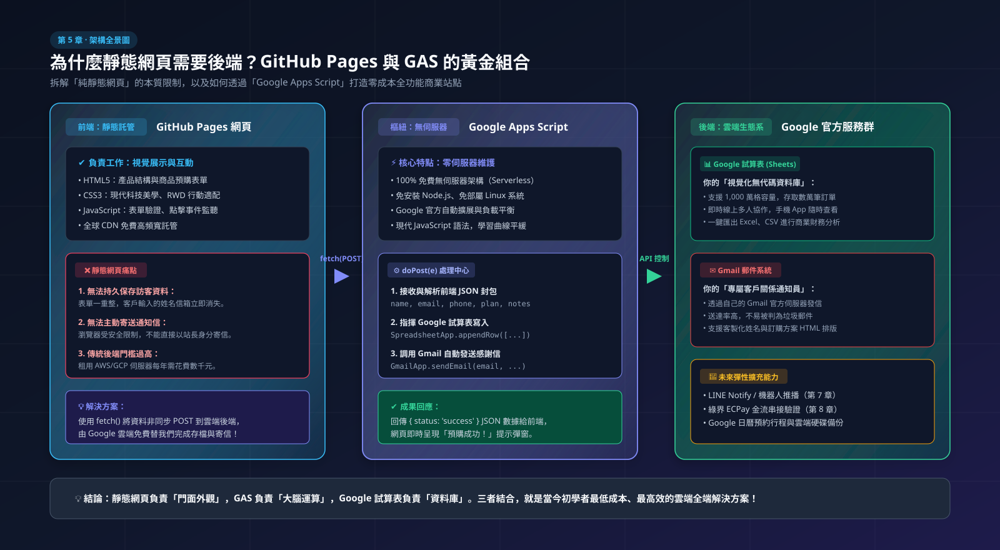
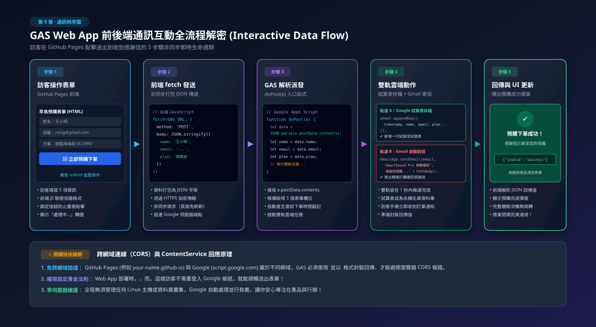
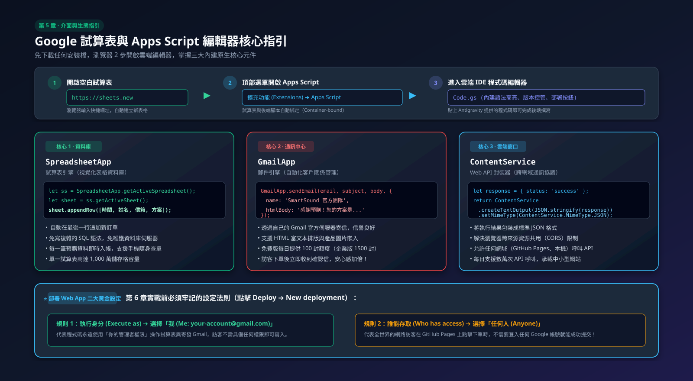

認識 Google Apps Script (GAS)：初學者的免費雲端超能力
在前面的章節，我們做好了網頁並發布到 GitHub Pages。但如果訪客想留下資料、預購商品，該怎麼辦？本章將帶你認識 Google 官方提供的「免費無伺服器後端」—— Google Apps Script (GAS)！
5-1 痛點剖析：為什麼靜態網頁需要「後端」？
我們在第 4 章透過 GitHub Pages 發布的網頁屬於「靜態網頁（Static Web Pages）」。靜態網頁非常適合用來展示產品、呈現精美排版與動畫，但它有一個天然的限制：
- ❌ 無法保存資料： 當訪客在「預購表單」填寫姓名與 Email 按下送出後，網頁一重新整理，資料就消失了。
- ❌ 無法主動寄信或通知： 瀏覽器本身基於安全限制，無法直接從訪客電腦以管理員身份寄送 Email。
- ❌ 傳統後端的門檻高： 過去想要接收表單，你需要租用 AWS / GCP 雲端伺服器、架設 Node.js 或 Python 後端、維護 SQL 資料庫，每年需花費數千元甚至具備專業工程師背景。
為了解決這個難題，我們需要一個零成本、免維護伺服器、開箱即用的解決方案 —— 這就是 Google Apps Script！

拆解純前端靜態託管的先天限制，以及如何藉助 Google 雲端生態系實現零成本、零主機費的全功能網站！
5-2 什麼是 Google Apps Script (GAS)？
Google Apps Script（簡稱 GAS） 是 Google 官方提供的輕量級雲端腳本語言（以現代 JavaScript 為核心）。它可以讓你在 Google 的強大伺服器上直接執行程式碼，並且天生就打通了所有 Google 服務的任督二脈！
不用自己建資料庫，試算表就是你現成的視覺化資料庫！
一行指令就能透過你自己的 Gmail 自動寄發排版精美的通知與感謝信。
發布為網路應用程式後，能產生專屬 API 網址，讓全世界任何網頁接收 POST 請求。
📊 Google 官方配額與使用限制清單（Quotas & Limits）
雖然 GAS 是免費的，但 Google 為了防止垃圾郵件與惡意濫用，設有每日配額（每 24 小時重置）。一般免費個人帳號（@gmail.com）與 Workspace 企業/教育帳號的限制如下：
| 功能項目 | 免費個人帳號 (@gmail.com) | Google Workspace (企業/學校) | 新手影響評估 |
|---|---|---|---|
| ✉️ 每日寄信上限 (Email) | 100 封 / 天 | 1,500 封 / 天 | 小型預購與報名非常夠用；若超過需等隔日或改用第三方郵件服務。 |
| ⏱️ 單次執行時間上限 | 6 分鐘 / 次 | 30 分鐘 / 次 | 寫入表單只花 1~2 秒，完全不需擔心超時。 |
| 🌐 Web App API 呼叫次數 | 約 20,000 ~ 50,000 次 / 天 | 100,000+ 次 / 天 | 接收表單與存檔綽綽有餘。 |
| 📈 試算表格數容量 | 單一試算表最多 1,000 萬個儲存格 | 能存取數十萬筆訂單，對初學者來說像座小型資料庫。 | |
| ⚡ 同時連線並行數 | 約 30 個並行請求同時寫入 | 一般網站順暢無礙；不適合搶演唱會門票等級的高併發流量。 | |
5-3 GAS 的運作原理：靜態網頁如何與 GAS 溝通？
當我們把 GAS 部署為「網路應用程式（Web App）」時，它就像在 Google 雲端開設了一個專屬收件窗口（API Endpoint）：
🔄 完整互動流程示意：
- 訪客操作： 訪客在 GitHub Pages 網頁上填寫「早鳥預購單」並點擊送出。
- 前端發送： 網頁的 JavaScript 使用
fetch()將資料打包發送給 GAS 的 Web App 網址。 - GAS 處理： GAS 觸發
doPost(e)函數，解析訪客傳來的姓名、信箱與商品選項。 - 雲端儲存與動作： GAS 把資料一行行寫入 Google 試算表，並調用 Gmail 自動發送確認信給訪客。
- 結果回應： GAS 回傳
{ "status": "success" }，網頁畫面上立即跳出「預購成功！」的溫馨提示。

完整展示「訪客填表 ➔ fetch 非同步傳遞 ➔ doPost 解析 ➔ 試算表存檔與 Gmail 發信 ➔ 狀態回傳」的 5 步驟生命週期！
5-4 認識 Google 試算表與 GAS 腳本編輯器
在我們正式為「SmartSound Pro 預購網頁」打造完整自動化之前，先來熟悉如何開啟 GAS 的雲端程式碼介面：
開啟 Google 試算表與 Apps Script
- 開啟瀏覽器前往 https://sheets.new 建立一份空白試算表，命名為「SmartSound Pro 預購名單資料庫」。
- 在頂部功能表點選 「擴充功能（Extensions）」 ➔ 「Apps Script」，系統就會自動開啟專屬的腳本編輯器。

瀏覽器快速進入路徑、掌握 SpreadsheetApp、GmailApp、ContentService 三大核心元件與 Web App 二大部署法則！
5-5 關鍵技巧：用自然語言請 Antigravity 替我們寫 GAS 核心接收腳本
你不必硬背 GAS 的專用指令（例如 SpreadsheetApp 或 ContentService），只要把預購表單的需求直接說給 Antigravity 聽！
請幫我寫一段標準 GAS 程式碼：
1. 包含標準的
doPost(e) 處理常式，接收前端傳來的 JSON 資料，包含 5 個預購欄位：name, email, phone, plan, notes。2. 將『當前時間戳記』連同這 5 個欄位，依序追加寫入（appendRow）到目前 Google 試算表的第一張工作表中。
3. 正確設定回應標頭以避免跨網域（CORS）問題，回傳
{ status: 'success' } 的 JSON 回應。4. 請附上清晰的中文註解，告訴我程式邏輯！"
在完成這段核心概念後，在下一章（第 6 章）我們將直接沿用這套 6 欄位規格，讓 AI 一併為我們生成 Excel 資料庫表格、升級自動寄發 Gmail 確認信，並與產品網頁全面打通！